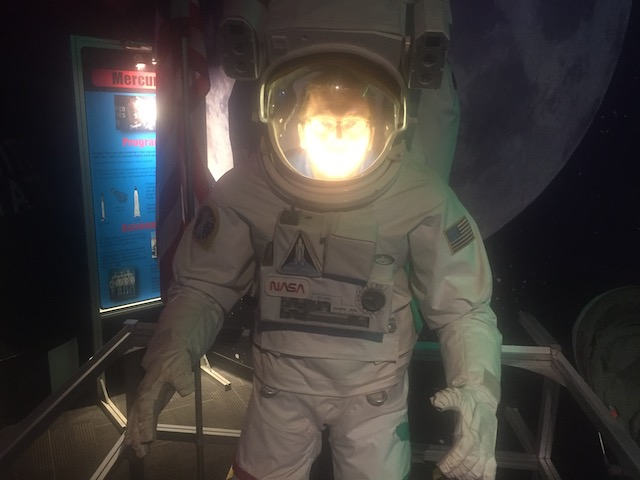
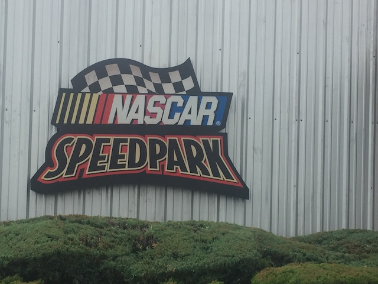
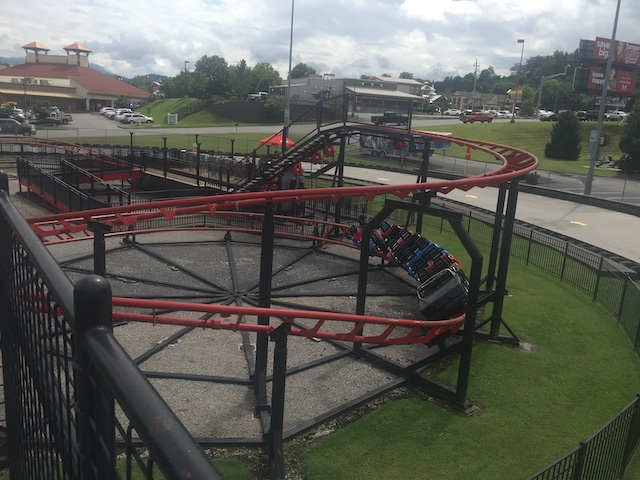
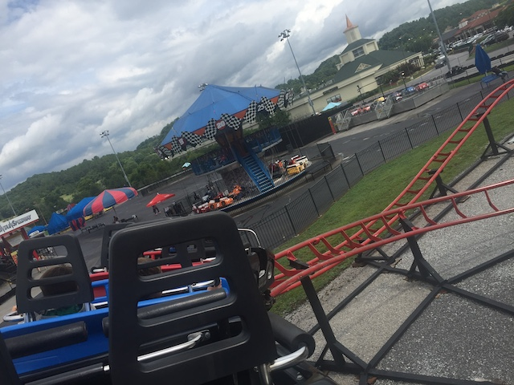
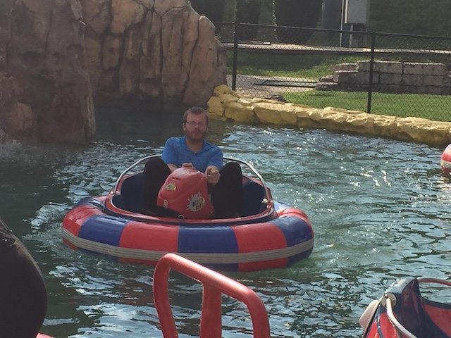
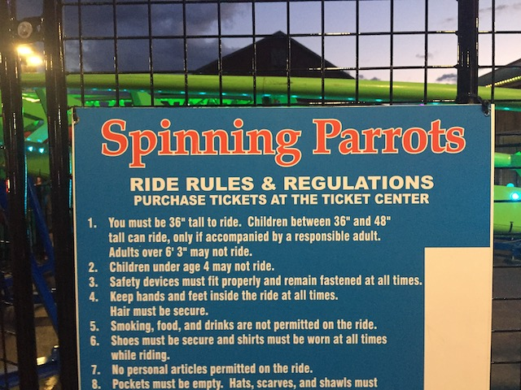
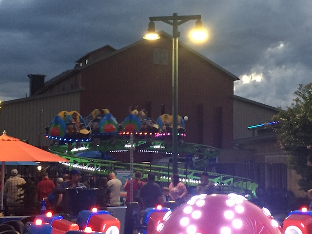

| |
Mid-Atlantic Trip 2019
Washington D.C Six Flags America Pigeon Forge Dollywood Carowinds Busch Gardens Williamsberg Kings Dominion
All right. So...this was an intersting day. You see, this was originally planned to be our Dollywood day. However, when we woke up, it was raining, and I remembered that Lightning Rod was very tempermental and finicky in the rain. And so, refusing to take a chance on going to Dollywood and having Lightning Rod be closed AGAIN, we postponed Dollywood for tomorrow and swapped it with our Pigeon Forge Random Sh*t day.
First stop of the day, the Wonderworks Museum.
So Wonderworks is essentially a science museum, only mixed in with some really cool exhibits, and even a couple attractions. They're apprently popular and in a couple towns in America. Perfect for a couple hours, and a great fit for a tacky tourist trap like Pigeon Forge. =)
Ooh. They have one of those disorienting tunnels here. You know, despite having done tons of them, they still somehow get me.
I think I found the inspiration for James Cameron.
"By the power of Zeus, I bring you LIGHTNING!!!"
The rejection of science in the South only continues to grow. Now they even reject gravity.
So this is mainly a science museum and just a place to have a lot of fun for a couple hours. However, they do have a couple..."rides", I guess they're more like attractions. Sort of. Case in point, the 360 Bikes. It's kind of like one of those 360 degree swinging ships. Except you have to pedal your way around. I know the point of this is to exercise, however, there is one little problem with the ride. Gravity. Specifically, when you're upsidedown, it's damn near impossible to pedal because....your feet literally are dropping to the ground, which....it just feels awkward. This thing needs those foot harnesses BADLY!!! It would be SO MUCH more fun with those, cause then you could actually keep pedaling and not worry about your feet falling.
*Sigh* With all the depressing and terrible sh*t going on in this world, I do wanna go off into outer space.

That's one small swipe for man. One giant credit card bill for future man.
This is what the good folks at NASA have discovered folks. A Ropes Course. You know, I thought outer space was gonna be more interesting than this.
Hey look! A cool room where you make a trippy acid music video! =)
If you're sick of playing Pacman on your phone, or if you're really old school, on an arcade game, you can come to Wonderworks and play Pacman on the big screen.
Ooh! Another attraction! And this isn't just any old simulator! This is one of those simulators where you make your own coaster, and then the simulator rides it out, and it flips, goes upsidedown, and does a lot of cool sh*t. Kind of reminds me of the simulators at Tokyo Joypolis. More simulators like this please!
"TASTE THE RAINBOW MOTHERF*CKERS!!!!"
All right. Well we had a fun couple hours at Wonderworks, but the time has come to move on. Hmm. Where should we go for lunch?
Well, I heard a lot of people on the internet give this resteraunt positive reviews. So....let's give it a shot.
So at Apple Barn, the main specialties that they brag about are their Apple Fritters, and their Apple Julep. The Apple Julep, meh. It was good, but....I'm just gonna be honest. I was dissapointed with it. The Apple Fritters on the other hand, REALLY FREAKING GOOD!!! I know I really like Apple Fritters as doughnuts. So....this shouldn't be a big surprise, but....having apple fritters with apple butter as your appetizer instead of bread, or chips, it's really good. I really want more resteraunts to pick up on this.
 As for the main food, it's pretty much standard Southern food. Which I have no problem with since....one thing the South does right is they know how to make good food.
As for the main food, it's pretty much standard Southern food. Which I have no problem with since....one thing the South does right is they know how to make good food.
OK. So there's an Apple Barn winery right nearby, and hey. We can go inside and get free samples. And...it's really good wine.
Aww. I know the feeling little puppy. Pass the Apple Wine pal. *chug*
Apple Butter!! Why you not in California!?
OK. Onto our next stop for the day.

Nascar Speedpark!? Why are we here!? Neither of us are Nascar fans? Oh no!
 Yep. *Sigh* We're here to credit whore.
Yep. *Sigh* We're here to credit whore.
 Fun fact. We almost hit this credit in 2016 after Dollywood, but when asked about it, I was tired and really didn't want to trek out to a go kart place to grab a sh*tty kiddy credit and said "Nah. Not in the mood". Well, Credit Whore Kevin was not pleased with me, and so he forced us to do it this time.
Fun fact. We almost hit this credit in 2016 after Dollywood, but when asked about it, I was tired and really didn't want to trek out to a go kart place to grab a sh*tty kiddy credit and said "Nah. Not in the mood". Well, Credit Whore Kevin was not pleased with me, and so he forced us to do it this time.

You may have thought that this Pigeon Forge was going to be a non-coaster update. But NOPE!!! Here's a coaster right here! =P

Cha-Ching!
 OK. One thing to note about the NASCAR Speedpark. There's no pay per ride option that I almost always do at credit whore places. You have to just do an all day wristband, which is $30. Now $30 to get a sh*tty credit is NOT worth it. However, the wristband also gets us access to all the go-karts. Throw in the fact that Jason loves Go-Karts and Credit Whore Kevin still REALLY wants that credit, and I sucked up the money. But hey. I'm going to make the most of it and get my moneys worth from this place and do a lot of Go-Karts.
OK. One thing to note about the NASCAR Speedpark. There's no pay per ride option that I almost always do at credit whore places. You have to just do an all day wristband, which is $30. Now $30 to get a sh*tty credit is NOT worth it. However, the wristband also gets us access to all the go-karts. Throw in the fact that Jason loves Go-Karts and Credit Whore Kevin still REALLY wants that credit, and I sucked up the money. But hey. I'm going to make the most of it and get my moneys worth from this place and do a lot of Go-Karts.
That's...quite an interesting Go Kart you got there.
So on one of the Go-Kart tracks, it was notorious for constantly having people spin out, crash, and the operator having to get the Go-Karts back on track. Though I don't think it was the track itself but rather the fact that we were driving with agressive asshole drivers who constantly cut you off, rammed into the sides, and.....GOD DAMN!!!! If you drive this bad on the go kart track, I dread to see how you are on the real road.

And oh look what else they have here. Bumper Boats. Why the hell are these rides much more fun than they should be!?
 Well, that was a lot of fun. But hey. Onto our next stop.
Well, that was a lot of fun. But hey. Onto our next stop.
So Pigeon Forge is known for having a lot of Alpine Coasters. We already did the Smokey Mountain one last time. So this time, we decided to do something different and do the one at Goats on the Roof.
Not only is the setting really good, but this one is definetly better than the one at Smokey Mountains.
Yeah. I still will call both the ones at Fort Fun and the one in Park City as better. But this is still a solid 3rd best Alpine Coaster.
I think I just converted a certain someone into loving Alpine Coasters.
The awkward little bit of the Goats on the Roof coaster where the cars go up a lifthill to go over the path. You don't ride on this part.
*gasp* Goats on the Roof has goats!? I would've never guessed!!
Well, we've had a long and busy day. But wait! What's this!? Where are we off to now!?
F*ck this cheap motel sh*t! We're upgrading tonight!
Excuse me. But where can I find some candy?
OK. So we're at the Island in Pigeon Forge. This place is basically a big outdoor shopping mall. But...why are we here?
Arr! The next gold rush be in Tennessee!
 Hmm. That's a cool looking flat ride.
Hmm. That's a cool looking flat ride.
 Hey look! Another ropes course! This one does look better, but I don't want to fork out that money.
Hey look! Another ropes course! This one does look better, but I don't want to fork out that money.
All right. We got our tickets. What are we going to ride today?

Oh god. It's credit whore time.

*gasp* There's an SBF Spinner here!? Activate Gary mode!!
And finally, we close out the night by eating at....the Paula Deen Resteraunt? This should be interesting.
"Oh, thank god. You two are white. Please feel free to eat at my resteraunt."
Gotta give a big thumbs up to that Georgia Peach Tea.
So to start out, we got served Paula Deen's Cheese Biscuits. Mmm. Really freaking good.
Yeah. The food here is really good. But at the same time....this sh*t is so likely to induce a heart attack. But...so good! Must keep eating!
And finally, we finish off with the Ooey Gooey Butter Cake. GOD DAMN!!! SO GOOD!!! This stuff is just....MMM!!! And now all the people from St. Louis are rolling their eyes at me for just discovoring Ooey Gooey Butter Cake.
Ooh! Love the pretty lights they have here!
That was a really fun day in Pigeon Forge. Tomorrow, Dollywood!
Dollywood
Home
|